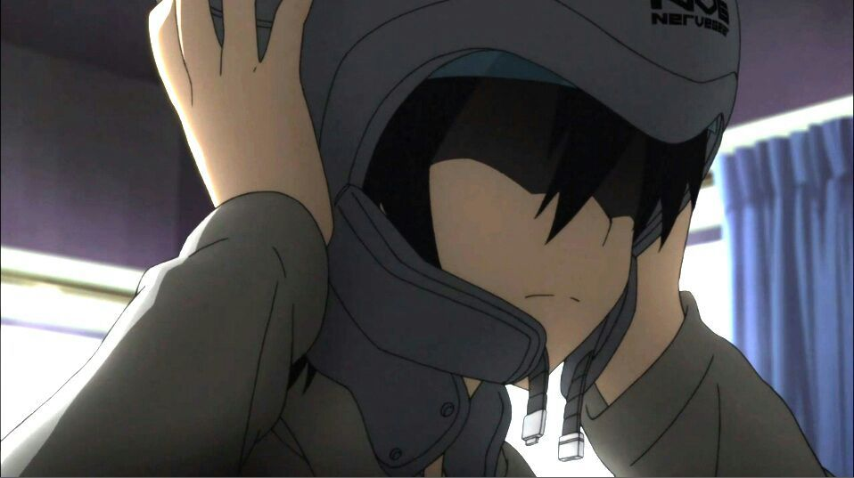

Sword Art Online
Sword Art Online é uma série de light novel escrita por Reki Kawahara em 2009, que em 2012 ganhou uma adpatação em anime dirigida por Tomohiko Itō e animada pelo estúdio A-1 Picture.
O anime se passa no ano de 2022 onde uma nova tecnologia está se popularizando muito, o NeverGear. O NeverGear é um dispositvo de realidade aumentanda, onde te possibilita jogar jogos de MMORPG com a capacidade de se assemelhar completamente com a realidade.
Nesse mesmo ano um novo jogo é lançado, com o propósito de extrair completamente os recursos do Nevergear e possibilitar uma expeiência totalmente imersiva e semelhante com o mundo real, o nome desse jogo é Sword Art Online.
Nosso protagonista é Kirigaya Kazuto, ou utilizando seu pseudônimo, Kirito. Kirito é um garoto de 14 anos fascinado por tecnologia e jogos de MMORPG. Antes mesmo do Sword Art Online ser lançado, ele conseguiu jogar o Beta Game dele, e ficou completamente animado com o jogo. Logo no lançamento do jogo, Kirito foi rapidamente ligar seu NeverGear e entrar no mundo de Sword Art Online.
Sword Art Online é composto por um mundo chamado Aincrad. Aincrad é um castelo voador que possui 100 andares, e para subir cada andar os jogadores tem que encontrar e derrotar o boss daquele andar. No beta teste o Kirito conseguiu chegar até o andar 9, e a missão dele agora que o jogo foi lançado, é conseguir subir até o andar 100 em alguns meses.